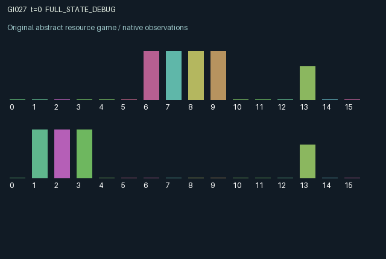

GI027 / LEGACY_ARRAY
Candidate astra-d2-00027: Cross-wired registers and stability audits
2 agents5 actions16 observation columns32 original horizonRuntime: PASS
Release verification episode
Untrained uniform legal actions. Actual JAX state sampled along the full original episode; full-state debug camera. No human performance or learning claim.

Run this game
crucibles play --game 27
Start Python locally, then open the address printed by the terminal. Installation, multiplayer, takeover and keyboard controls →
Objective, rewards & ending
Exact task contract
{
"objective": "Accumulate original per-agent rewards under the interaction rules in mechanism.md.",
"natural_termination": "No early terminal; original t >= 32 horizon.",
"exact_transition_and_reward_source": "def raw_step(self, key, state, actions):\n flip_first = actions == 0\n flip_second = actions == 1\n rotate = actions == 2\n shield = (\n (actions == 3)\n & (state[\"shield_charge\"] >= 0.35)\n & jnp.any(state[\"pulse\"] != 0, axis=1)\n )\n incoming = jnp.where(shield[:, None], 0, state[\"pulse\"])\n local_flip = jnp.stack(\n (\n flip_first.astype(jnp.int32),\n flip_second.astype(jnp.int32),\n jnp.zeros((2,), dtype=jnp.int32),\n ),\n axis=1,\n )\n register = jnp.mod(state[\"register\"] + incoming + local_flip, 2)\n register = jnp.where(\n rotate[:, None], jnp.roll(register, 1, axis=1), register\n ).astype(jnp.int32)\n outgoing = jnp.stack(\n (\n jnp.zeros((2,), dtype=jnp.int32),\n flip_first.astype(jnp.int32),\n flip_second.astype(jnp.int32),\n ),\n axis=1,\n )\n pulse = jnp.roll(outgoing, 1, axis=0).astype(jnp.int32)\n changed = jnp.any(register != state[\"register\"], axis=1)\n dirty = state[\"audit_dirty\"] | changed\n completed = state[\"audit_timer\"] == 1\n success = completed & state[\"snapshot_match\"] & jnp.logical_not(dirty)\n start = (actions == 4) & (state[\"audit_timer\"] == 0)\n audit_timer = jnp.where(\n start, 2, jnp.maximum(state[\"audit_timer\"] - 1, 0)\n ).astype(jnp.int32)\n snapshot_match = jnp.where(\n start,\n jnp.all(register == state[\"target\"], axis=1),\n state[\"snapshot_match\"],\n )\n audit_dirty = jnp.where(\n start,\n False,\n jnp.where(state[\"audit_timer\"] > 0, dirty, False),\n ).astype(jnp.bool_)\n target = jnp.where(\n success[:, None], 1 - state[\"target\"], state[\"target\"]\n ).astype(jnp.int32)\n shield_charge = jnp.clip(\n state[\"shield_charge\"] + 0.08 - 0.35 * shield.astype(jnp.float32),\n 0.0,\n 1.0,\n )\n costs = (\n 0.020 * (flip_first | flip_second).astype(jnp.float32)\n + 0.010 * rotate.astype(jnp.float32)\n + 0.015 * shield.astype(jnp.float32)\n + 0.015 * start.astype(jnp.float32)\n )\n rewards = jnp.clip(\n jnp.where(completed, jnp.where(success, 0.70, -0.18), 0.0) - costs,\n -1.0,\n 1.0,\n ).astype(jnp.float32)\n next_state = {\n \"t\": state[\"t\"] + jnp.array(1, dtype=jnp.int32),\n \"register\": register,\n \"target\": target,\n \"pulse\": pulse,\n \"shield_charge\": shield_charge.astype(jnp.float32),\n \"audit_timer\": audit_timer,\n \"snapshot_match\": snapshot_match.astype(jnp.bool_),\n \"audit_dirty\": audit_dirty,\n }\n done_all = next_state[\"t\"] >= 32\n dones = jnp.full((2,), done_all, dtype=jnp.bool_)\n info = {\"done_all\": done_all, \"legal_mask\": self.legal_actions(next_state)}\n return self.observe(next_state), next_state, rewards, dones, info"
}Declared per-step reward bounds: -1.0 to 1.0. Observability: source_defined.
Rules
Original mechanism document (historical status wording retained)
# Candidate astra-d2-00027: Cross-wired registers and stability audits Status: original parentless source authored under the supplied contract. No candidate execution, JAX initialization, compiler check, isolated validation, eligibility decision, or learning experiment was performed by the author. ## Causal mechanism Each agent owns a three-bit register and a privately observed three-bit target. Flipping either of the first two local bits emits a delayed pulse to the other register: flipping local bit zero pulses the other's bit one, and flipping local bit one pulses the other's bit two. Pulses become the counterpart's pending input and are applied on its next transition. Addition modulo two implements the bit flips. A role may rotate its whole register, shield against its pending pulses, or start an audit. An audit snapshots whether the post-action register matches the private target and then waits two further transitions. It succeeds only if that snapshot matched and the register has remained unchanged at the end of each intervening transition. Changes that are later undone still spoil the audit, because a persistent dirty flag records them. Exactly canceling incoming and local flips within one transition does not count as a change: stability is defined at transition endpoints. A successful audit complements all three target bits, creating another local obligation. A failed audit leaves the target unchanged. The other agent can help construct a needed bit or spoil an audit by emitting a delayed pulse; its visible audit timer also creates an opportunity to avoid interfering. ## Actions and information The five actions are 0 flip bit zero, 1 flip bit one, 2 rotate the register by one position, 3 shield, and 4 start an audit when idle. All actions remain legal. Action 4 while an audit is running does not restart it. Local rotation emits no pulse. Shielding works only when charge is at least 0.35 and at least one pending pulse exists. It suppresses all current incoming pulses, consumes 0.35 charge, and incurs a cost. Charge regenerates by 0.08 each transition up to one. A shield action with no incoming pulse is a free wait; one with insufficient charge cannot block a pulse. The 16 observation columns are time; the three own register bits; the three own target bits; the three other register bits; the three pending incoming pulse bits; own shield charge; own audit timer; and other audit timer. Time and timers are normalized. The first incoming pulse channel is structurally zero because wiring addresses only bits one and two. Targets, shield charge, and audit status details are otherwise local: the other target is not revealed, and snapshot-match and audit-dirty flags are not directly observed. The acting role can infer those audit flags from its own observation history. Incoming pulses and both registers are public to their relevant displayed roles. ## Incentives, delay, and reward bounds A completed successful audit pays 0.70; a completed failed audit pays -0.18. A bit flip costs 0.020, rotation costs 0.010, an effective shield costs 0.015, and launching an audit costs 0.015. The action alternatives make these costs mutually exclusive for one role. Rewards therefore lie within [-0.20,0.70] before the explicit final clip to [-1,1]. These are source-derived bounds, not measured outcomes. A pulse has a one-transition actuation delay, and an audit requires stability for two subsequent transitions. Shielding can create a temporary protected interval, but its stock replenishes more slowly than the charge consumed by repeatedly blocking pulses. Targets are private, so an action that changes the other register can be helpful or harmful depending on unobserved intent. Timing and restraint may matter; their learning effectiveness is unknown. ## Relationship and limits This relates to generic coupled finite-state control, binary switching networks, delayed interference, and temporal stability checks. No external puzzle, benchmark source, parent candidate, or score was read. The source does not assert novelty, nonisomorphism, duplicate status, mechanism eligibility, or compiler success. Timing may be easier or harder depending on the paired policy, and generic waiting could be sufficient during some intervals. The 32nd transition returns the terminal state without resetting registers or resolving audits that would finish later.
Commands
0Flip first register
1Flip second register
2Rotate register routing
3Shield incoming pulse
4Start stability audit
Roles & abilities
agent_0 Original legacy agent; see mechanism and source
agent_1 Original legacy agent; see mechanism and source
Observation permissions
Training receives only the original observation rows. Role cameras use declared visibility; debug cameras are explicitly marked. Local benchmark records log debug exposure and role takeover history.
Exact observation layout
[
{
"slice": [
0,
16
],
"visibility": "exact original observe() below",
"source_code": "def observe(self, state):\n obs = jnp.zeros((2, 16), dtype=jnp.float32)\n obs = obs.at[:, 0].set(state[\"t\"] / 32.0)\n obs = obs.at[:, 1:4].set(state[\"register\"].astype(jnp.float32))\n obs = obs.at[:, 4:7].set(state[\"target\"].astype(jnp.float32))\n obs = obs.at[:, 7:10].set(jnp.roll(state[\"register\"], 1, axis=0).astype(jnp.float32))\n obs = obs.at[:, 10:13].set(state[\"pulse\"].astype(jnp.float32))\n obs = obs.at[:, 13].set(state[\"shield_charge\"])\n obs = obs.at[:, 14].set(state[\"audit_timer\"] / 2.0)\n obs = obs.at[:, 15].set(jnp.roll(state[\"audit_timer\"], 1, axis=0) / 2.0)\n return obs.astype(jnp.float32)"
}
]Entity visibility & attributes
[]
Actual verification & provenance
Per-game execution receipt
{
"game": "gi027",
"status": "PASS",
"verification_revision": 2,
"source_sha256": "c4342be818a43a75a7bce377af7128326e139767a598314957627e1320bf85ec",
"seed": 20261101,
"runtime": {
"jax": "0.4.38",
"numpy": "1.26.4",
"devices": [
"TFRT_CPU_0"
]
},
"dimensions": {
"num_agents": 2,
"observation_size": 16,
"num_actions": 5,
"max_steps": 32
},
"checks": {
"eager_reset": {
"status": "PASS",
"seconds": 0.7299232482910156
},
"observation_spaces_legal_masks": {
"status": "PASS",
"seconds": 0.1339859962463379
},
"eager_step": {
"status": "PASS",
"seconds": 1.0942316055297852
},
"jit_reset": {
"status": "PASS",
"seconds": 0.23403143882751465
},
"jit_step": {
"status": "PASS",
"seconds": 0.2532029151916504
},
"eager_jit_integer_parity_float_measurement": {
"status": "PASS",
"seconds": 0.0
},
"jit_vmap_reset": {
"status": "PASS",
"seconds": 0.3550550937652588
},
"jit_vmap_step": {
"status": "PASS",
"seconds": 0.4041023254394531
},
"outer_autoreset_api": {
"status": "PASS",
"seconds": 0.9438076019287109
},
"full_original_horizon_episode_and_render": {
"status": "PASS",
"seconds": 1.805551290512085
}
},
"human_scores": null,
"browser_controls": "PENDING",
"failures": [],
"elapsed_seconds": 6.469360589981079,
"float_parity_max_abs": 0.0,
"numerical_parity": "EXACT",
"raw_terminal_absorbing": "NOT_PART_OF_ORIGINAL_LEGACY_CONTRACT",
"terminal_outer_reset": "PASS",
"episode_steps": 32,
"scripted_random_returns": [
-1.3250000402331352,
-0.8800000101327896
],
"terminal": true,
"demo_information": "FULL_STATE_DEBUG",
"demo_frames": 33,
"render_roles_checked": 2
}Chromium control verification
{
"game": "gi027",
"status": "PASS",
"human_scores": null,
"engineering": true,
"checks": [
"catalog_selected_and_real_native_reset",
"dom_queue_and_native_step",
"second_participant_ownership_and_native_joint_step",
"all_roles_individually_controllable_no_role_cap",
"explicit_debug_camera",
"release_to_pure_ai_without_reset",
"close_session_preserves_log"
],
"ui_sha256": "96243f9de144b80b5e20a114330e2206bdcd58d3efc9c6f13bbc08b95cacc14d",
"keyboard": "NO_LEGAL_CARDINAL_COMMAND_FOR_ROLE0_AT_RESET",
"seconds": 3.0881590843200684
}Original identity and file hashes
{
"id": 27,
"key": "gi027",
"title": "Candidate astra-d2-00027: Cross-wired registers and stability audits",
"summary": "",
"tags": [],
"family": "legacy_array",
"dimensions": {
"num_agents": 2,
"observation_size": 16,
"num_actions": 5,
"max_steps": 32
},
"source_sha256": "c4342be818a43a75a7bce377af7128326e139767a598314957627e1320bf85ec",
"manifest_sha256": "74928d98f6632391e2b986ec21dd120d8c7736e884bc991d3d5463c44ccbbd1e",
"files": [
{
"file": "candidate.py",
"sha256": "c4342be818a43a75a7bce377af7128326e139767a598314957627e1320bf85ec",
"bytes": 4784,
"origin": "work/exp_2/astra_generation/discovery_v2/initial/candidate_00027/attempt_00/candidate.py"
},
{
"file": "mechanism.md",
"sha256": "f7022f3bec808a3affc85cac4fc5713e87254396cd76abf9314006c4eec62bcf",
"bytes": 4409,
"origin": "work/exp_2/astra_generation/discovery_v2/initial/candidate_00027/attempt_00/mechanism.md"
}
],
"original_status": "LEGACY_SOURCE",
"original_saved_replay": false,
"release_validation": "PASS",
"human_scores": null,
"browser_validation": "PASS"
}